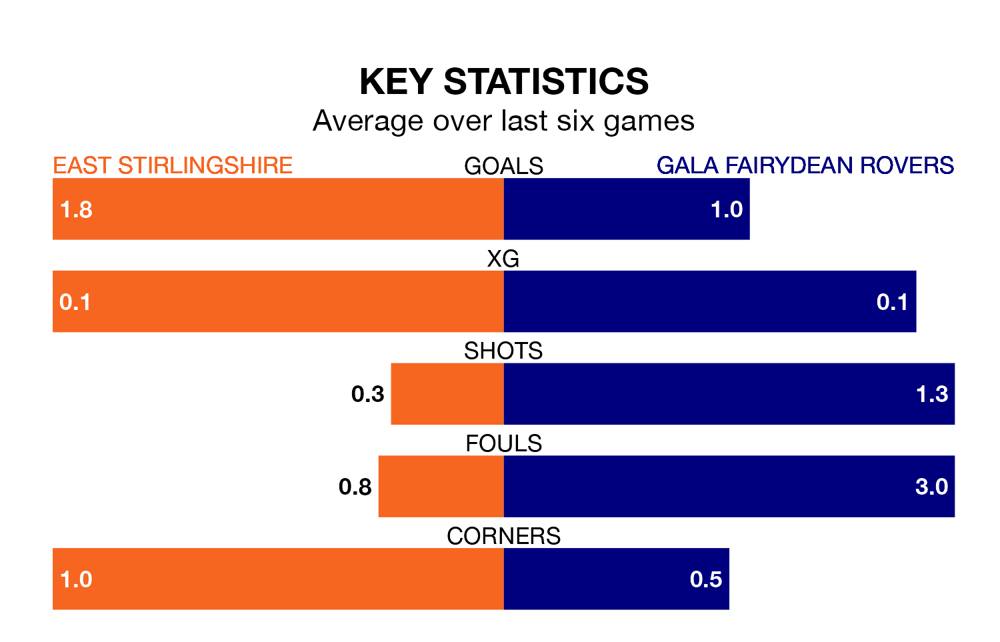

Struggling East Stirlingshire face Gala Fairydean Rovers at the Falkirk Community Stadium on Saturday looking to build on a win in their last league outing.
After securing all three points with a 3-2 victory over Gretna 2008 on January 27, the Shire sit 16th in Lowland Football League.
They travel to play a Gala Fairydean side 15th in the standings, who lost in their last match, 3-0 against Albion Rovers.
In the last 10 years, East Stirlingshire and Gala Fairydean have played each other on 12 occasions. East Stirlingshire won seven of them, Gala Fairydean three, and they drew twice.
On average, the Shire scored 2.4 goals and Gala Fairydean 0.8 in those matches.
Their last meeting was on July 25, when Gala Fairydean won 2-0 at home.
East Stirlingshire are in mixed form in Lowland Football League, with two wins and a draw from their last six games.
With a win and a draw over that period, Gala Fairydean's form is worse – they have taken four points from 18, compared to the Shire's seven.
With 34 goals in 25 games so far this season, Rovers are scoring at below the league average rate with 1.4 goals per game. And they are conceding more than average, letting in 64 goals at a rate of 2.6 per game.
The home side are also below average scorers, with 1.5 goals per game, compared to a league average of 1.7. They have conceded 2.0 goals per game.
Updated: 15:45 (UTC), 02/02/24